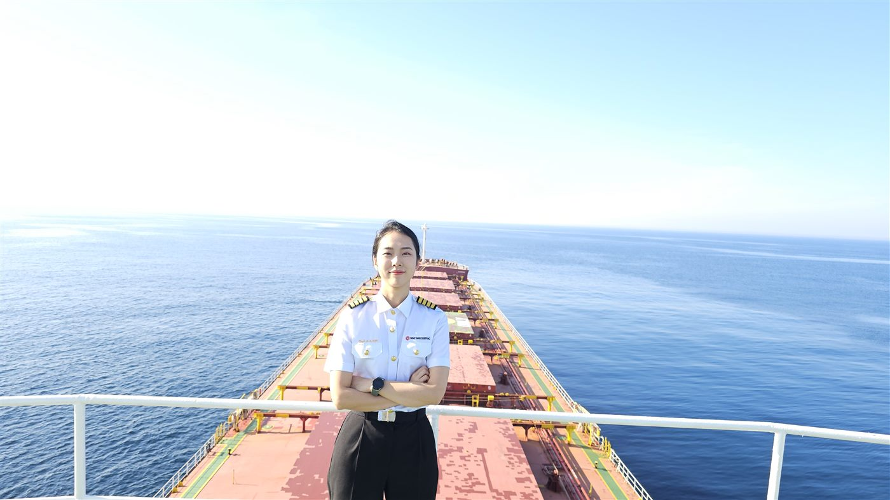

MASTER MARINER · 코리아쉽메니져스
김승주
삼등항해사에서 선장까지 — 바다에서 쓴 9년의 항해기
한국해양대학교 해사수송과학부를 졸업하고 2016년 삼등항해사로 첫 승선한 이래, 컨테이너선의 갑판을 지키며 항해사의 모든 계급을 거쳐 2025년 4월 선장이 되었습니다. 바다에서 배운 것들을 책과 강연, 방송으로 나눕니다.
CURRENT RANK선장 (Master)
VESSEL OPERATOR코리아쉽메니져스
SEA SERVICE2016 – 현재

AT SEA · Container Vessel Deck
EXPLORE
항해록 둘러보기
프로필부터 섭외 문의까지, 필요한 페이지로 바로 이동하세요.
PROFILE
프로필
여성 항해사 500명 중 3명, 그리고 선장. 부산에서 나고 자라 한국해양대학교를 거쳐 오늘의 항로에 이르기까지.
자세히 보기 →SHIP'S LOG
항해 일지
삼등항해사부터 선장까지, 9년의 승선 기록을 계급장·항로와 함께 확인하세요.
자세히 보기 →BOOKS
저서
에세이부터 청소년 진로 지침서까지, 현장의 언어로 쓴 세 권의 기록.
자세히 보기 →ON AIR
미디어·채널
유 퀴즈 온 더 블럭부터 유튜브·블로그까지, 방송과 채널에서 만나는 이야기.
자세히 보기 →CONSULTATION
항해 상담실
지금 상황을 들려주시면, 실제 경력을 바탕으로 AI가 답해드립니다.
상담 받기 →CHARTER REQUEST
섭외 문의
강연·방송 섭외는 이곳에서. 연락처는 페이지에 공개되지 않습니다.
문의하기 →